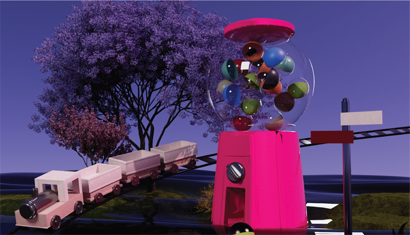
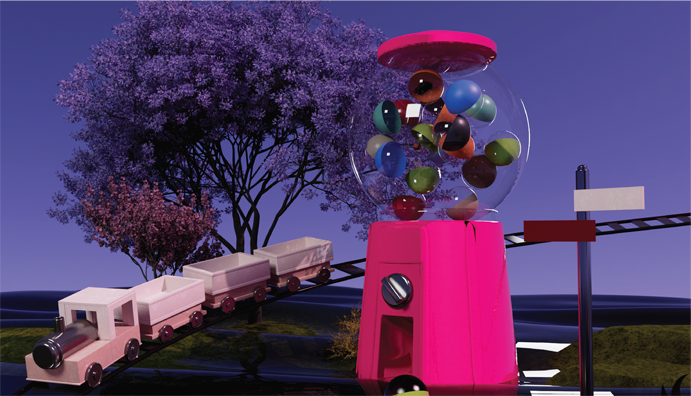
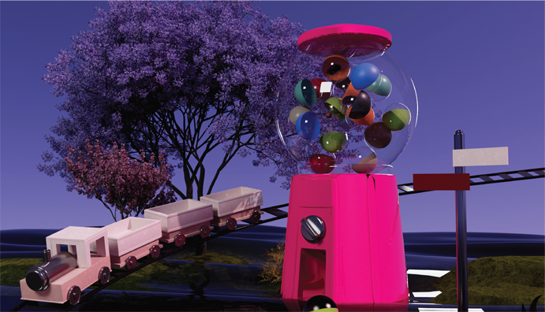
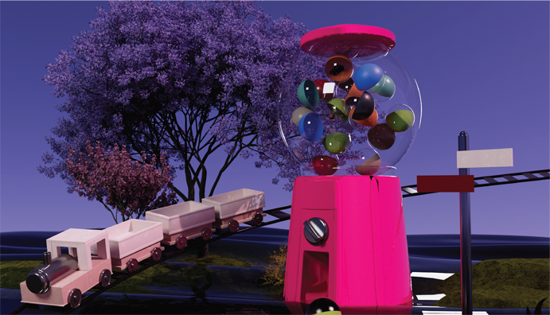

Tone & Manner

Story Board
Final Cut
1920*1080
 


나의 행복한 과거의 기억들을 비밀의 화원을 통해 볼 수 있다면?
이 생각을 바탕으로 뽑기 기계를 생각해냈다. 내가 행복했던 상황들과 기억이
뽑기 기계의 통 안에 존재하고, 그 기억을 뽑는다 라는 컨셉을 잡았다.
나만의 뽑기통은 자연과 물이 있는 곳에 존재하고, 기차가 기억의 통을 싣고
다닌다. 그 속에 있는 행복했던 기억들을 보며 안정과 행복을 찾는다.
 

©Sangmyung University Department of Communication Design / Su Yeon Kim